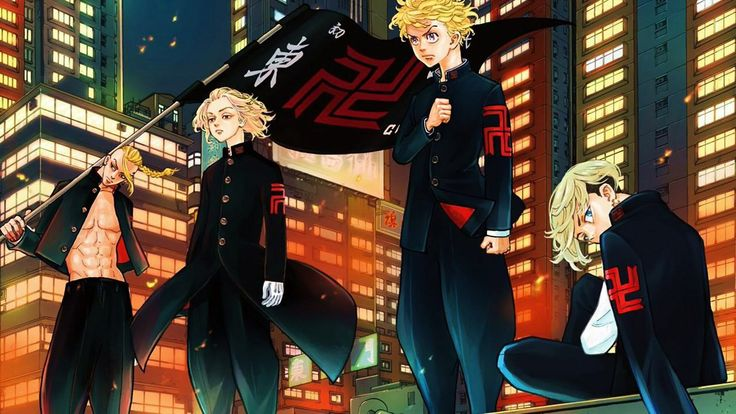

Tokyo Revengers conta a história de Takemichi Hanagaki, um jovem de 26 anos que vive uma vida simples e bastante monótona. Ele trabalha em um emprego que não gosta e sente que não conseguiu fazer muita coisa importante desde a época da escola. Um dia, Takemichi assiste a uma notícia na televisão que muda completamente sua vida: Hinata Tachibana, sua antiga namorada, morreu junto com seu irmão mais novo, Naoto Tachibana. Os dois foram vítimas da Tokyo Manji Gang, também conhecida como Toman, uma organização criminosa que se tornou muito poderosa no futuro
Pouco tempo depois, Takemichi sofre um acidente em uma estação de trem. Quando pensa que sua vida acabou, ele misteriosamente volta 12 anos no passado, para a época em que ainda estava no ensino fundamental. Ele percebe que está novamente diante de seus antigos colegas e, principalmente, de Hinata, que ainda está viva. Ao perceber que recebeu uma oportunidade de mudar o passado, Takemichi decide que fará tudo o que puder para impedir a morte dela.
Depois de voltar ao passado, Takemichi conversa com Naoto e conta que, no futuro, ele e Hinata morrerão. Takemichi pede que Naoto proteja sua irmã. Quando retorna ao presente, ele descobre que Naoto conseguiu sobreviver e agora trabalha como investigador. Naoto percebe que as informações dadas por Takemichi estavam corretas e entende que ele realmente consegue viajar no tempo.
A partir disso, os dois começam a trabalhar juntos. Takemichi volta ao passado para descobrir o que levou a Toman a se transformar em uma organização criminosa e tenta alterar os acontecimentos responsáveis pela morte de Hinata. Porém, ele logo percebe que mudar o futuro será muito mais difícil do que imaginava.
Durante suas viagens ao passado, Takemichi conhece os principais integrantes da Tokyo Manji Gang. Entre eles estão Manjiro Sano, conhecido como Mikey, e Ken Ryuguji, conhecido como Draken. Mikey é o líder da Toman e possui uma personalidade carismática, além de ser extremamente habilidoso em combate. Draken é seu braço direito e costuma agir de maneira mais responsável, tentando impedir que Mikey tome decisões impulsivas.
Takemichi também conhece Keisuke Baji, Chifuyu Matsuno, Takashi Mitsuya, Pah-chin, Kazutora Hanemiya e outros membros. No começo, Takemichi é considerado fraco, principalmente porque não possui a mesma força física dos outros integrantes. Mesmo assim, ele começa a ganhar o respeito deles por sua coragem e por nunca abandonar seus amigos.
Takemichi percebe que a Toman nem sempre foi uma organização criminosa. No passado, seus integrantes eram adolescentes que criaram a gangue principalmente por causa de sua amizade e do desejo de proteger uns aos outros. O problema é que, com o passar dos anos, várias pessoas e acontecimentos acabam levando a organização para um caminho completamente diferente.
Um dos primeiros grandes conflitos acontece quando a Toman entra em guerra contra a gangue Moebius. Takemichi descobre que Draken está em perigo e que sua morte será um dos acontecimentos responsáveis por transformar o futuro.
Durante a batalha, Takemichi tenta proteger Draken mesmo sabendo que não possui força suficiente para derrotar os inimigos sozinho. Ele continua lutando apesar do medo e consegue ajudar seus amigos. Draken sobrevive, e Takemichi percebe que sua presença no passado realmente consegue alterar os acontecimentos.
Essa experiência faz com que ele entenda que cada pequena mudança pode modificar completamente o futuro. Porém, também mostra que impedir uma tragédia pode fazer com que outras surjam.
Depois do conflito com Moebius, surge uma nova ameaça: a Valhalla, uma gangue conhecida por sua violência. Nesse momento, Kisaki Tetta começa a ganhar cada vez mais influência dentro da Toman.
Baji, um dos fundadores da Toman e amigo próximo de Mikey, aparentemente abandona a organização e passa para o lado da Valhalla. Takemichi inicialmente acredita que Baji se tornou inimigo da Toman, mas descobre que ele estava infiltrado para investigar Kisaki e descobrir suas verdadeiras intenções.
A situação leva a uma grande batalha entre Toman e Valhalla. Durante o confronto, Baji é gravemente ferido. Mesmo estando em uma situação extremamente difícil, ele continua preocupado com seus amigos e tenta proteger a Toman. No fim, Baji morre, causando um grande impacto em Mikey, Chifuyu e nos outros integrantes.
A morte de Baji também faz Takemichi perceber que Kisaki está diretamente ligado a muitos dos acontecimentos que levam a Toman para um futuro criminoso.
A história também revela o passado de Kazutora, outro dos fundadores da Toman. Kazutora possui uma relação complicada com Mikey por causa de um acontecimento envolvendo Shinichiro Sano, o irmão mais velho de Mikey.
No passado, Kazutora e Baji tentaram conseguir uma motocicleta para presentear Mikey. Durante essa tentativa, Kazutora acaba se envolvendo em um acontecimento trágico que muda sua vida e sua relação com Mikey.
Esse passado ajuda a explicar por que Kazutora carrega tanta culpa e por que sua relação com Mikey é marcada por sentimentos conflitantes. Takemichi percebe que muitos dos problemas da Toman surgiram de acontecimentos antigos que nunca foram realmente resolvidos.
Depois da batalha contra Valhalla, Takemichi volta ao futuro e descobre que algumas coisas mudaram, mas Hinata ainda está em perigo. Para tentar alterar novamente o futuro, ele volta ao passado e acaba envolvido com a Black Dragon, uma antiga organização criminosa.
Nesse arco, Takemichi conhece Hakkai Shiba, sua irmã Yuzuha e seu irmão mais velho, Taiju Shiba. Taiju é o líder da Black Dragon e possui uma personalidade extremamente agressiva. Hakkai tenta proteger Yuzuha dos problemas familiares e acaba escondendo muitas coisas sobre sua vida.
Takemichi e seus amigos enfrentam Taiju e outros membros da organização. Durante o conflito, Takemichi demonstra mais uma vez que sua principal característica não é a força física, mas sua capacidade de continuar lutando mesmo quando acredita que não conseguirá vencer.
Depois dessa batalha, mais uma mudança acontece no futuro. Algumas pessoas que antes tinham destinos trágicos conseguem sobreviver, mostrando novamente que as escolhas de Takemichi estão fazendo diferença.
O próximo grande conflito envolve a Tenjiku, uma organização liderada por Izana Kurokawa. A Tenjiku possui vários membros poderosos e tem como objetivo derrotar a Toman.
Takemichi descobre mais sobre o passado de Izana e sua relação com a família de Mikey. Ele também conhece melhor Emma, irmã de Mikey e uma pessoa muito importante para Draken.
A guerra entre Toman e Tenjiku se torna uma das maiores batalhas da história. Takemichi tenta reunir forças para proteger seus amigos e impedir que o futuro volte a seguir o mesmo caminho.
Durante os acontecimentos, Emma é morta, causando uma enorme mudança emocional em Mikey e Draken. A perda dela mostra que, mesmo depois de todas as tentativas de Takemichi, algumas tragédias ainda conseguem acontecer.
No final, a Toman consegue derrotar a Tenjiku. Kisaki acaba sendo derrotado e sua influência sobre a organização diminui. Porém, Takemichi percebe que o problema ainda não está completamente resolvido.
Quando Takemichi retorna ao futuro, descobre que conseguiu salvar várias pessoas, mas uma nova realidade problemática surgiu. Mikey se tornou uma pessoa extremamente perigosa e criou sua própria organização criminosa.
Os antigos membros da Toman também estão envolvidos em diferentes organizações. Takemichi percebe que, em suas tentativas de salvar Hinata, ele acabou mudando várias coisas, mas não conseguiu salvar Mikey.
Por isso, ele decide que sua missão não será mais apenas proteger Hinata. Ele também precisa descobrir uma maneira de impedir que Mikey seja consumido pela violência.
No arco final, três grandes organizações entram em disputa pelo controle do submundo de Tóquio. A primeira é a Brahman, liderada por Senju Kawaragi. A segunda é a Rokuhara Tandai, liderada por South Terano. A terceira é a Kanto Manji Gang, liderada por Mikey.
Takemichi acaba envolvido nesse conflito porque não quer abandonar Mikey. Ele percebe que seu amigo está cada vez mais preso a um caminho de violência e que existe algo no passado dele que precisa ser compreendido.
Durante esses acontecimentos, Takemichi também percebe que sua habilidade de viajar no tempo possui uma conexão mais profunda com Mikey. Isso permite que os dois tenham a oportunidade de voltar para um período ainda mais antigo.
Takemichi e Mikey conseguem retornar para a infância. Dessa vez, eles têm a oportunidade de mudar os acontecimentos antes mesmo da formação da Toman.
Eles tentam impedir as tragédias que aconteceram anteriormente e evitar que seus amigos acabem envolvidos em situações que levam à morte ou à criminalidade. Ao conhecer melhor o passado de Mikey, Takemichi entende que muitos dos problemas que aconteceram ao longo da história poderiam ter sido evitados se determinadas escolhas fossem diferentes.
Os dois passam a trabalhar juntos para construir um futuro diferente. Aos poucos, conseguem impedir vários acontecimentos trágicos e criar uma nova realidade.
Na nova linha do tempo, várias pessoas que haviam morrido nas outras realidades conseguem sobreviver. Baji, Emma, Draken e outros personagens têm a oportunidade de viver suas vidas sem passar pelas mesmas tragédias.
Os antigos integrantes da Toman também seguem caminhos diferentes. Em vez de se tornarem criminosos, muitos conseguem construir carreiras e vidas próprias.
Mikey também consegue escapar do destino que o levaria para a criminalidade. Ele continua próximo de seus amigos e consegue viver de uma maneira muito diferente daquela que Takemichi conheceu nas outras linhas do tempo.
Depois de todas as viagens no tempo, batalhas e perdas, Takemichi finalmente consegue alcançar seu principal objetivo: salvar Hinata.
Na nova realidade, Hinata permanece viva e continua ao lado de Takemichi. Os dois crescem, seguem suas vidas e, posteriormente, se casam.
No casamento, vários dos personagens que participaram da história aparecem juntos. Isso mostra o quanto o destino deles mudou em comparação com as primeiras linhas do tempo.